Cirmolo · app musicale per Miyoo Flip
Cirmolo Synth
Una groovebox in tasca: una drum machine con un sequencer potente, un basso acido e un synth da melodie. Niente campioni: ogni colpo e ogni nota sono sintetizzati al momento.
Dodici batterie scelte fra 34 modelli, l'Acido alla 303 con slide e accento, e Piega, un synth West Coast con wavefolder e low-pass gate. Probabilità, condizioni, ripetizioni e poliritmi fanno sì che il ritmo non sia mai uguale; le levette fanno filtro DJ, stutter e fill.
Nella Home di Cirmolo, sotto Musica. Le schermate di questa pagina vengono dal codice dell'app, compilato sul PC: sono disegnate esattamente come sulla console.
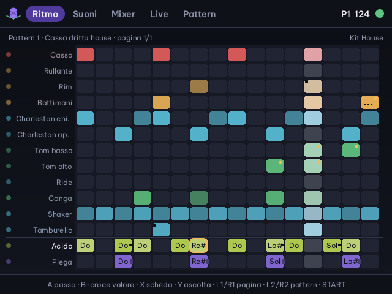
Primi passi
Dal primo START a un brano registrato
Cinque pagine, e SELECT passa alla successiva: Ritmo, Suoni, Mixer, Live, Pattern. START suona e ferma in qualunque pagina. Tutto si salva da solo: all'apertura ritrovi pattern, suoni e mixer come li avevi lasciati.
Premi START
Al primo avvio il pattern 1 ha già un ritmo house, un giro di Acido e qualche nota di Piega.
Carica un ritmo
Pagina Pattern: destra fino ai Ritmi pronti, scegli e premi A. Arrivano anche il kit, il tempo e lo swing.
Cambia i passi
Pagina Ritmo: A accende o spegne un passo, B tenuto + su/giù ne cambia la forza.
Scrivi un giro di Acido
Sulla riga Acido: A mette la nota, B + su/giù la cambia di un semitono, + sinistra/destra di un'ottava.
Suona dal vivo
Pagina Live: i 12 tasti suonano le batterie. Levetta sinistra filtro DJ, levetta destra in su stutter, in giù fill.
Registra
R3 registra quello che senti; nella pagina Pattern R1 esporta il pattern o la catena in WAV.
In tutte le pagine
| SELECT | pagina successiva |
| START | suona o ferma, sempre dall'inizio del pattern o della catena |
| R3 | registra l'uscita in WAV; di nuovo R3 ferma |
| L3 | spegne tutte le note (nella pagina Live cambia modo) |
| MENU | esce: A o giù conferma, B o su resta |
Le levette
| Sinistra, di lato | filtro DJ: a sinistra passa-basso, a destra passa-alto; al centro torna al valore del mixer |
| Destra in su | stutter: ripete l'ultimo frammento, da 1/4 a 1/32 quanto più la spingi |
| Destra in giù | fill: suonano i passi «Solo nel fill», tacciono quelli «Non nel fill» |
In alto a destra lo schermo mostra il pattern che suona e il tempo; il pallino verde batte il tempo.
Pagina Ritmo
Quattordici righe, un passo alla volta
Una riga per traccia: le 12 batterie, poi Acido e Piega. Il colore dice lo strumento (rosso le casse, ambra i rullanti, azzurro i charleston, verde tom e pelli, rosa le percussioni), la luminosità la forza del colpo. Ogni traccia può avere da 1 a 64 passi.
Tasti della griglia
| Croce | sposta il cursore |
| A | accende o spegne il passo; da fermo lo fa anche sentire |
| B + su · giù | batterie: più forte · più piano; Acido e Piega: nota su · giù |
| B + destra · sinistra | batterie: ripetizioni da 1 a 4; Acido e Piega: ottava |
| X | apre la scheda del passo e della traccia |
| Y | fa sentire la traccia o la nota |
| L1 · R1 | pagina di 16 passi |
| L2 · R2 | pattern da modificare |
Come si legge un passo
| Puntini in basso | ripetizioni: 2, 3 o 4 colpi nel passo |
| Angolo tagliato | probabilità sotto il 100% |
| Pallino in alto | una condizione; ambra se è «Solo nel fill» |
| Trattino sotto | valori bloccati per quel passo |
| Tacca in alto | passo spostato in anticipo o in ritardo |
| Nome della nota | Acido e Piega; un trattino a destra è lo slide, una barretta una nota lunga |
| Numero a destra | lunghezza della traccia; » doppia, « metà, ³ terzine |
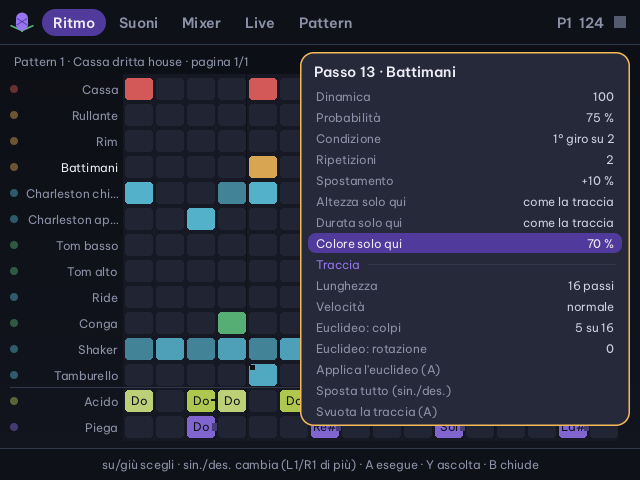
Nella scheda su e giù scelgono la riga, sinistra e destra cambiano il valore, L1 e R1 a passi grandi, A esegue le azioni, B o X chiudono.
- Dinamicada 1 a 127
- Probabilitàquante volte su cento il passo suona
- Condizionesempre, solo nel fill, non nel fill, 1° o 2° giro su 2, 1 giro su 4, solo il 1° giro
- Ripetizionida 1 a 4 colpi dentro il passo
- Spostamentoda −50% a +50% di un passo
- Solo quialtezza, durata e colore di questo colpo soltanto (nell'Acido il taglio, in Piega le pieghe)
- Acido e Pieganota, accento, slide (Acido) o durata in passi (Piega)
- Traccialunghezza, velocità, euclideo (colpi e rotazione), sposta tutto, svuota
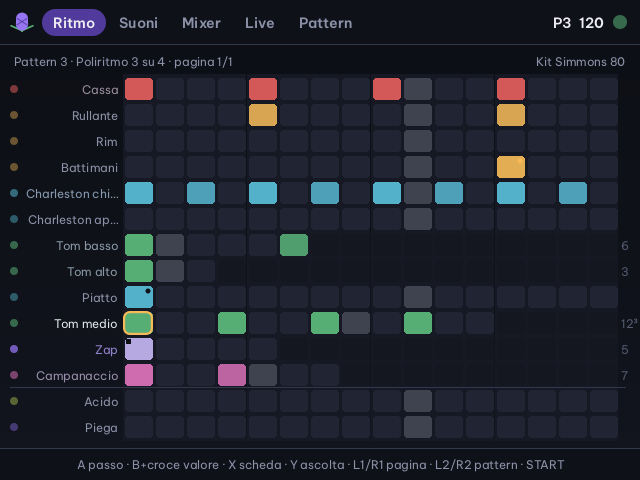
Probabilità e condizioni
Un charleston al 50% suona un giro sì e uno no, a caso. «1° giro su 2» e «2° giro su 2» fanno di una battuta una frase di due; «Solo nel fill» prepara rullate che senti solo quando tieni la levetta destra in giù.
Lunghezze e velocità
Ogni traccia gira con la sua lunghezza: 12 passi contro 16 tornano a combaciare solo ogni 48. La velocità può essere doppia, metà o in terzine.
Euclideo
Distribuisce N colpi su una lunghezza nel modo più regolare: 3 su 8 è il tresillo, 5 su 8 il cinquillo. La rotazione sposta l'inizio.
Pagina Suoni
Kit, strumenti e due synth
A sinistra il kit e le 14 tracce, a destra i parametri della traccia scelta e l'oscilloscopio. Su e giù scelgono il parametro, sinistra e destra lo cambiano (con B tenuto di più), L1 R1 cambiano traccia, L2 R2 cambiano kit, A fa sentire, Y fa una piccola variazione a caso.
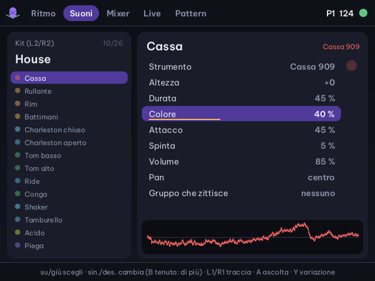
- Strumentouno dei 34 modelli
- Altezza±24 semitoni
- Duratada cortissima a lunghissima
- Colorefiltro, brillantezza, corpo o rumore
- Attaccoclic, schiocco o caduta d'altezza iniziale
- Spintasaturazione
- Volume e panil pan è lo stesso del mixer
- Gruppo che zittiscetracce dello stesso gruppo si tagliano a vicenda, come i charleston chiuso e aperto
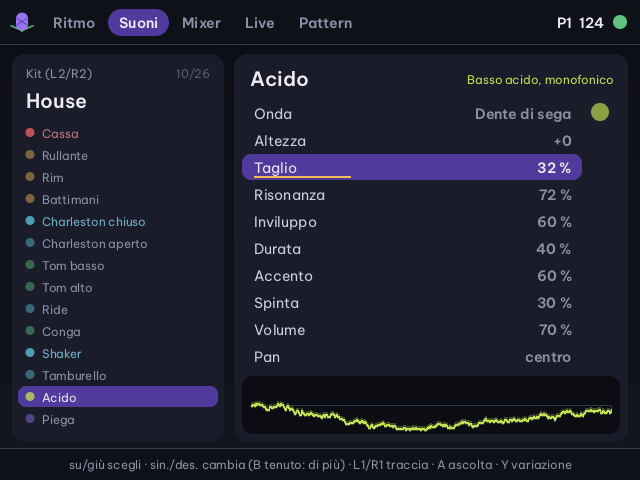
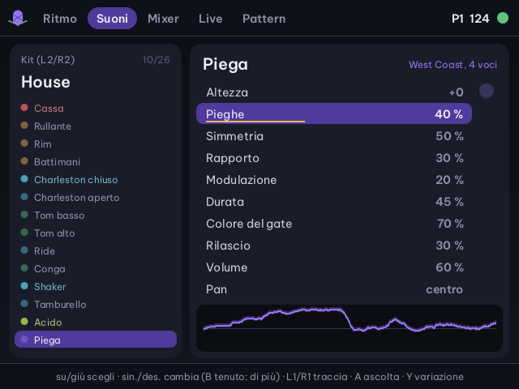
Casse e rullanti
Cassa 808, 909, acustica, FM e gabber; rullante 808, 909, acustico e spazzola; rim, battimani, schiocco di dita.
Charleston e piatti
Charleston chiuso, aperto e FM, piatto crash e ride; shaker, tamburello, triangolo.
Tom e pelli
Tom, tom elettronico alla Simmons, conga, bongo e tabla con la caduta d'altezza.
Percussioni
Campanaccio, claves, legnetto.
8 bit
Cassa, rullante e charleston con il rumore delle console di una volta.
Effetti
Zap, glitch e soffio.
I 26 kit (1–13)
| 808 Classica | cassa lunga, campanaccio, conga |
| 909 Club | house e techno, ride e crash |
| 606 Tic | piccola e secca, per l'acid house |
| CR-78 Vintage | bongo, maracas, tamburello |
| Linn 80 | acustica degli anni Ottanta |
| DMX Hip hop | acustica sporca e pesante |
| Simmons 80 | tom elettronici, cassa FM, zap |
| Trap | 808 lunga, charleston brillanti |
| Techno industriale | tutto saturato: metallo, glitch |
| House | 909 morbida, conga, shaker |
| Jungle | acustica alta, rullante ghost, sub 808 |
| Lo-fi | acustica scura, legnetto, fruscio |
| Chiptune NES | 8 bit: rumore, blip, glitch |
I 26 kit (14–26)
| Game Boy | 8 bit più acuta: bip, laser |
| Jazz spazzole | spazzole, cross stick, ride, splash |
| Rock acustica | tre tom, crash e ride |
| Latina | timbale, tumba, conga, clave, guiro |
| Afro | djembe, shekere, tamburo parlante |
| Bossa e samba | surdo, caixa, tamborim, agogo, cuica |
| Dembow | 808 e timbal per il reggaeton |
| Elettro | 808 elettro, tom elettronici |
| IDM glitch | cassa FM, glitch, bit |
| Minimal | pochi suoni corti e precisi |
| Dub | tom profondi, sirena |
| Gabber | cassa distorta, tutto saturato |
| Ambient | tabla, triangolo, soffio |
Il kit vale per tutti i pattern. Cambiarlo sostituisce i 12 strumenti, non i pattern né il mixer.
Pagina Mixer
Quattordici strisce e un master
Per ogni traccia il livello che suona, il volume, il pan, le mandate a eco e riverbero, muto e solo. A destra il master: tempo, swing, effetti e il clock MIDI.
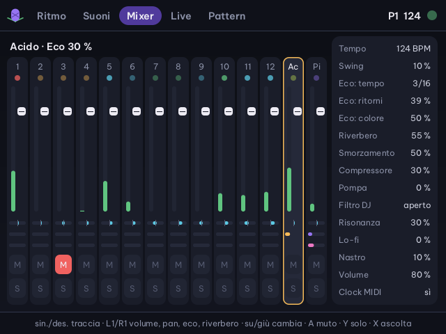
Tasti del mixer
| Sinistra · destra | sceglie la striscia; dopo Piega c'è il master |
| L1 · R1 | volume, pan, eco, riverbero; sul master il parametro |
| Su · giù | cambia il valore (B tenuto: di più) |
| A | muto |
| Y | solo |
| X | fa sentire la traccia |
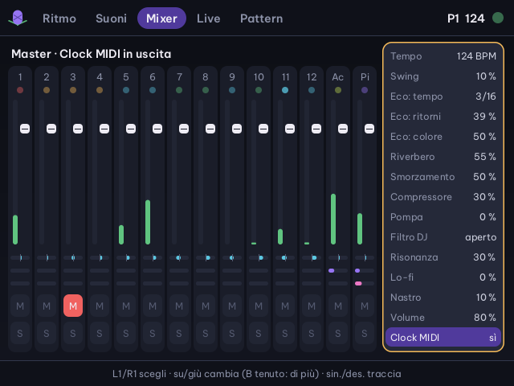
- Tempo e swingda 40 a 240 BPM; swing fino al 75% (al 33% sono terzine)
- Ecoping-pong a tempo, da 1/16 a 8/16, con ritorni e colore
- Riverberograndezza e smorzamento
- Compressore e pompail mix respira sulla cassa, come un sidechain
- Filtro DJpunto di partenza e risonanza; la levetta sinistra parte da qui
- Lo-fi e nastrobit ridotti; saturazione e un leggero ondeggiare
- Clock MIDI in uscitaclock, Start e Stop al dispositivo collegato; acceso all'inizio
Pagina Live
I tasti della Flip diventano pad
Dodici tasti, dodici batterie, disposti come sulla console: la croce suona le tracce 1–4, Y B A X le 5–8, i dorsali L2 L1 R1 R2 le 9–12. Ogni pad si illumina a ogni colpo, anche a quelli del sequencer.
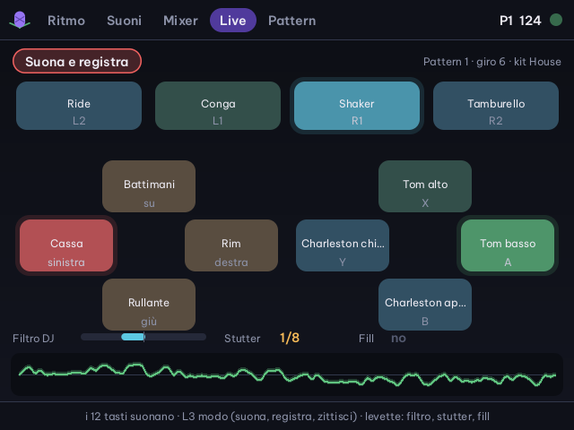
Suona
I tasti suonano gli strumenti, sopra al sequencer.
Suona e registra
Mentre il sequencer va, ogni colpo si scrive nel pattern che suona, sul passo più vicino. Anche i pad MIDI registrano.
Zittisci
Ogni tasto accende e spegne il muto della sua traccia: si costruisce il brano togliendo e rimettendo strumenti.
L3 passa da un modo all'altro. In fondo alla pagina si vedono filtro DJ, stutter e fill delle levette.
Pagina Pattern
Sedici pattern, una catena, 33 ritmi
A sinistra i 16 pattern, con una barretta colorata per ogni traccia che suona; sotto la catena, a destra i ritmi pronti. Il pattern viola è quello che modifichi, il pallino verde quello che suona.
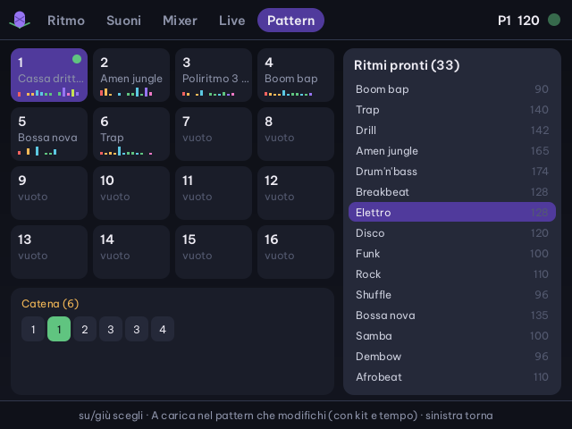
Tasti dei pattern
| Croce | sceglie il pattern; destra dall'ultima colonna passa ai ritmi pronti |
| A | modifica questo pattern; senza catena suona dalla fine del giro. Se la catena è accesa, la spegne |
| X | aggiunge il pattern alla catena (fino a 64) |
| L1 | toglie l'ultimo dalla catena |
| Y, poi Y | copia, poi incolla su un altro pattern |
| B, poi B | svuota il pattern |
| R1 | esporta in WAV |
Nei ritmi pronti: su/giù sceglie, L1/R1 salta di 10, A carica nel pattern che modifichi le 12 batterie con kit, tempo e swing; Acido e Piega restano. Sinistra torna ai pattern.
Ritmi pronti (1–17)
| 124 | Cassa dritta house · House |
| 132 | Techno · Techno industriale |
| 90 | Boom bap · DMX Hip hop |
| 140 | Trap · Trap |
| 142 | Drill · 808 Classica |
| 165 | Amen jungle · Jungle (32 passi) |
| 174 | Drum'n'bass · Jungle |
| 128 | Breakbeat · Linn 80 |
| 128 | Elettro · Elettro |
| 120 | Disco · 909 Club |
| 100 | Funk · CR-78 Vintage |
| 110 | Rock · Rock acustica |
| 96 | Shuffle · Rock acustica (terzine) |
| 135 | Bossa nova · Bossa e samba |
| 100 | Samba · Bossa e samba |
| 96 | Dembow · Dembow |
| 110 | Afrobeat · Afro |
Ritmi pronti (18–33)
| 75 | Reggae one drop · Dub |
| 136 | Dub steppers · Dub |
| 140 | Jazz swing · Jazz spazzole (terzine) |
| 82 | Lo-fi hip hop · Lo-fi |
| 150 | Chiptune · Chiptune NES |
| 160 | Game Boy · Game Boy |
| 124 | Minimal · Minimal |
| 150 | IDM · IDM glitch |
| 180 | Gabber · Gabber |
| 80 | Ambient · Ambient |
| 120 | Poliritmo 3 su 4 · Simmons 80 |
| 140 | Half time · Linn 80 |
| 160 | Footwork · 808 Classica |
| 100 | Latina: son e tumbao · Latina |
| 125 | Acid house · 606 Tic |
| 132 | Garage 2-step · 909 Club |
Il numero è il tempo in BPM, dopo il nome c'è il kit. Tutti usano probabilità, condizioni e ripetizioni: tieni il fill per sentire le rullate.
Catena
I pattern suonano nell'ordine della catena, un giro ciascuno, a ripetizione; lo stesso pattern può tornare più volte. Si cambia anche mentre suona.
Esportazione
R1 scrive un WAV senza fermare la musica: il pattern per 4 giri o la catena intera, più due secondi di coda per eco e riverbero.
Niente annulla
Svuotare chiede B due volte. Prima di provare, copia il pattern in uno libero con Y.
MIDI
Pad, tastiere e clock
Collega una tastiera o dei pad MIDI USB alla porta USB-C, anche ad app aperta: compare il nome del dispositivo e si suona subito, insieme ai tasti della Flip. Con il clock in uscita acceso la Flip dà il tempo agli strumenti collegati.
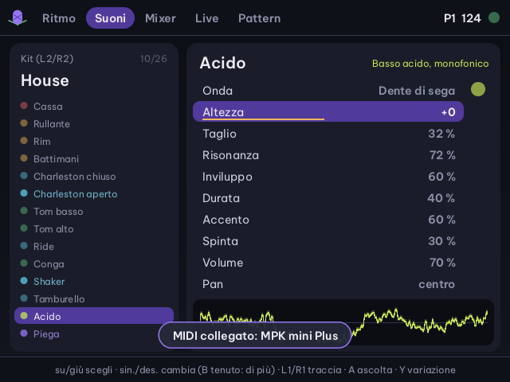
Cosa fa il controller
| Canale 10, note 36–47 | le 12 batterie in ordine; le altre note come nel General MIDI |
| Altri canali | l'Acido o Piega, l'ultima delle due scelta in Ritmo o Suoni (all'avvio l'Acido) |
| CC 70–77 o 24–31 | otto manopole sui primi otto valori della traccia scelta (anche encoder infiniti) |
| Pitch bend | filtro DJ |
| Modulazione (CC 1) | stutter |
| Program change | kit: 0 è 808 Classica |
| Start · Stop | fanno partire e fermare il sequencer |
| Clock in uscita | 24 impulsi per battito, Start e Stop con START |
La Flip non segue un clock esterno: il tempo è sempre il suo. Le note della tastiera non si registrano nel pattern; i pad sì, in «Suona e registra».
Le otto manopole
| Batterie | altezza, durata, colore, attacco, spinta, volume, pan, riverbero |
| Acido | altezza, taglio, risonanza, inviluppo, durata, accento, spinta, volume |
| Piega | altezza, pieghe, simmetria, rapporto, modulazione, durata, colore del gate, rilascio |
Regolano la traccia scelta in Ritmo, Suoni o Mixer; la pagina Suoni mostra il parametro che cambia.
Akai MPK mini Plus
| Pad 1–12 | le 12 batterie |
| Pad 13 tenuto | fill |
| Pad 14 · 15 · 16 tenuti | stutter 1/8 · 1/16 · 1/32 |
| Joystick | filtro DJ |
| Rotella | stutter |
| Arpeggiatore e sequencer | in modalità External seguono il tempo della Flip |
| Presa Clock Out | porta il clock della Flip a synth e drum machine analogici |
I pad 13–16 sono le note 48–51 sul canale 10: con la MPK mini Plus fanno fill e stutter invece di tom e piatti.
I numeri delle manopole e dei tasti di trasporto (Play e Stop) della MPK mini Plus non sono ancora verificati sulla tastiera vera. Il synth risponde alle CC 70–77 e 24–31 e ai messaggi MIDI Start e Stop: se la MPK manda altro, quei comandi non fanno niente.
Tutti i tasti
Pagina per pagina
SELECT, START, R3, L3, MENU e le levette fanno la stessa cosa dappertutto. Il resto cambia con la pagina.
Ritmo
| Croce | cursore |
| A | passo sì / no |
| B + croce | dinamica e ripetizioni, o nota e ottava |
| X | scheda del passo |
| Y | ascolta |
| L1 · R1 | pagina di passi |
| L2 · R2 | pattern da modificare |
Scheda del passo (X)
| Su · giù | sceglie la riga |
| Sinistra · destra | cambia il valore |
| L1 · R1 | cambia a passi grandi |
| A | esegue: euclideo, svuota, accento, slide |
| Y | ascolta |
| B · X | chiude |
Suoni
| Su · giù | parametro |
| Sinistra · destra | valore (B tenuto: di più) |
| L1 · R1 | traccia |
| L2 · R2 | kit |
| A | ascolta |
| Y | variazione |
Mixer
| Sinistra · destra | striscia, poi il master |
| L1 · R1 | riga o parametro del master |
| Su · giù | valore (B tenuto: di più) |
| A · Y · X | muto · solo · ascolta |
Live
| Croce | tracce 1–4 |
| Y · B · A · X | tracce 5–8 |
| L2 · L1 · R1 · R2 | tracce 9–12 |
| L3 | suona, suona e registra, zittisci |
Pattern
| Croce | pattern; destra → ritmi pronti |
| A | modifica (spegne la catena) |
| X · L1 | aggiunge · toglie dalla catena |
| Y | copia / incolla |
| B due volte | svuota |
| R1 | esporta in WAV |
File sulla scheda SD
Dove finisce quello che suoni
Lo stato si salva da solo, all'uscita e ogni 30 secondi se hai cambiato qualcosa. Registrazioni ed esportazioni sono WAV stereo a 48 kHz e 16 bit.
Saves/cirmolo-synth/stato.txtsuoni, kit, mixer, i 16 pattern e la catenaSaves/cirmolo-synth/registrazioni/registrazione-2026-10-13-213000.wavle registrazioni fatte con R3Saves/cirmolo-synth/registrazioni/pattern-….wav,catena-….wavle esportazioni fatte con R1Saves/spruce/cirmolo-synth.logil registro dell'appApp/CirmoloSynth/srci sorgenti in C, con le prove automatiche e le schermate
Tutto il resto è nel manuale completo (anche in inglese): i 34 modelli, ogni campo della scheda del passo, la mappa MIDI e i limiti attuali.
Le altre app